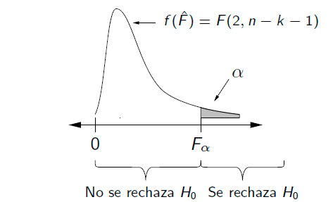
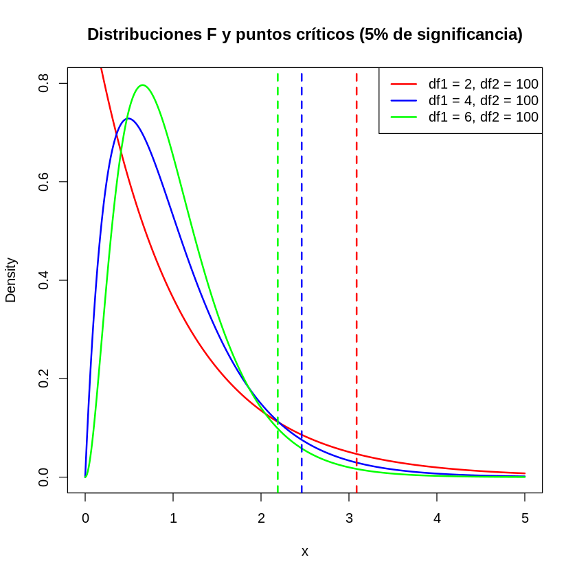
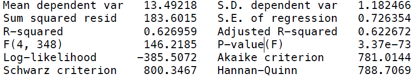
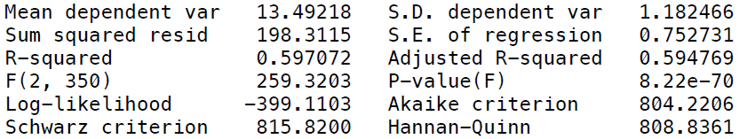
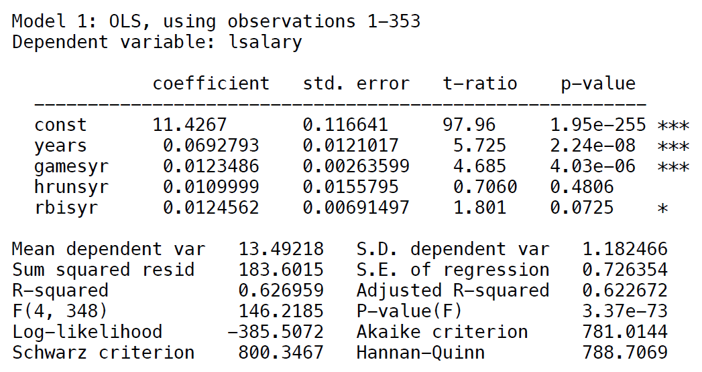

Clase 9 · Inferencia sobre un conjunto de parámetros: el test F
Contenido oficial de la semana
Esta página reproduce íntegras y en orden las diapositivas de la cátedra del viernes de la
semana 9 (sem9/Clase10.tex, 20 láminas). Los bloques Interactivo, los casos y las preguntas
son material adicional para estudiar.
Cómo estudiar esta página
La clase está ordenada en 5 temas. Cada tema parte con una pregunta guía, sigue con las láminas y los simuladores, y termina con ✍️ preguntas de selección múltiple (cada alternativa incorrecta explica por qué no lo es) y un 🧪 ejercicio de R que puedes editar y ejecutar aquí mismo, sin instalar nada. Los 5 ejercicios de R en un solo archivo: 📥 clase9.R.
🎯 Objetivos de la sesión
- Plantear hipótesis sobre varios parámetros a la vez, como \(H_0: \beta_3 = \beta_4 = 0\).
- Construir el estadístico \(F\) comparando el modelo restringido y el no restringido, con SSR o con \(R^2\).
- Decidir con la distribución \(F(j, n-k-1)\) y entender por qué el test conjunto puede rechazar aunque ninguna \(t\) lo haga.
- Hacer la prueba de significancia global de una regresión.
🗓️ Agenda de la cátedra (viernes 18:40 – 21:25)
Haz clic en un tema para ir directo a él.
- 18:401Varios parámetros a la vezláminas 1–4 · ✍️ 2 preguntas · 🧪 R
- 19:052Modelo restringido y el estadístico Fláminas 5–10 · ✍️ 3 preguntas · 🧪 R
- 19:353La zona de rechazo y la distribución Fláminas 11–12 · ✍️ 2 preguntas · 🧪 R
- 19:55☕ Receso
- 20:054Ejemplo: rendimiento y salario en el baseballláminas 13–18 · ✍️ 2 preguntas · 🧪 R
- 20:505F, multicolinealidad y significancia globalláminas 19–20 · ✍️ 2 preguntas · 🧪 R
- 21:15✅ Ideas clave, autoevaluación y cierre
Inferencia sobre un conjunto de parámetros: el test F
📄 Diapositivas: sem9/Clase10.tex · 20 láminas
Varios parámetros a la vez
¿Cómo testear si dos variables, juntas, no aportan nada?
Test de hipótesis sobre un conjunto de parámetros
-
A menudo estamos interesados en testear hipótesis para varios parámetros a la vez.
-
Por ejemplo si dos coeficientes son 0 al mismo tiempo.
-
En ese caso, las hipótesis se verían de la siguiente forma:
$$ \begin{aligned} H_0 & : \beta_{\text{1}} = \beta_{\text{2}} = 0 \ H_1 & : \text{Al menos uno }\neq 0
\end{aligned} $$
-
Cuando se rechaza la hipótesis nula se dice que \(x_1\) y \(x_2\) son conjuntamente significativas al correspondiente nivel de significancia.
-
Noten que en este caso, el test NO dice cuál de las variables tiene un efecto en \(y\). Puede ser una sola, varias o todas.
-
Para esto vamos a usar un estadístico F.
Repaso relevante para esta clase
Partiendo de \(y = \beta_0 + \beta_1 x_1 + \beta_2 x_2 + \ldots + \beta_k x_k + u\), calculo por MCO y obtengo la predicción: \(\hat{y}\). Definiciones:
\(SST : \sum_i (y_i - \bar{y})^2\) \(\rightarrow\) variabilidad de \(y\)
\(SSE : \sum_i (\hat{y}_i - \bar{y})^2\) \(\rightarrow\) lo explicado por mi modelo
\(SSR : \sum_i \hat{u}_i^2\) \(\rightarrow\) lo que mi modelo no explica/se equivoca
\(SST : SSE + SSR\) \(\rightarrow\) lo que explico + lo que no explico con mi modelo
\(R^2 : 1 - \frac{SSR}{SST}\) \(\rightarrow\) fracción de la variabilidad de \(y\) que es explicada por mi modelo
Repaso: Si agrego variables relevantes, cae mi SSR
Supongan que parto estimando \(y = \beta_0 + \beta_1 x_1 + u\).
-
SST = SSE + SSR
-
SST = lo que explico + lo que no explico con el modelo
-
\(R^2 = 1 - \frac{SSR}{SST}\)
el % de la variabilidad de y que es explicada por mi modelo
¿Qué pasa si agrego a mi modelo una variable \(x_2\) relevante para explicar \(y\)?
Supongan que parto estimando \(y = \beta_0 + \beta_1 x_1 + u\).
-
SST = SSE + SSR
-
SST = lo que explico + lo que no explico con el modelo
-
\(R^2 = 1 - \frac{SSR}{SST}\)
el % de la variabilidad de y que es explicada por mi modelo
¿Qué pasa si agrego a mi modelo una variable \(x_2\) relevante para explicar \(y\)? Cae mi \(SSR\) y aumenta mi \(R^2\).
✍️ Practica · Tema 1
Se rechaza H₀: β₁ = β₂ = 0. ¿Qué podemos concluir?
✅ Se dice que x₁ y x₂ son conjuntamente significativas.
Al agregar una variable relevante al modelo, ¿qué pasa con la SSR?
✅ Láminas 3 y 4: SST = ↑SSE + ↓SSR.
🧪 Practica en R · La SSR baja al agregar una variable
Compara la SSR y el R² de un modelo sin y con una variable relevante.
set.seed(1)
n <- 100
x1 <- rnorm(n)
x2 <- rnorm(n)
y <- 1 + 0.8 * x1 + 0.6 * x2 + rnorm(n)
m1 <- lm(y ~ x1) # sin x2
m2 <- lm(y ~ x1 + x2) # agregando x2, que es relevante
c(SSR_sin_x2 = sum(resid(m1)^2), SSR_con_x2 = sum(resid(m2)^2))
c(R2_sin_x2 = summary(m1)$r.squared, R2_con_x2 = summary(m2)$r.squared)
🎯 Reto: cambia 0.6 * x2 por 0 * x2 (x₂ irrelevante). ¿Baja igual la SSR? ¿Cuánto?
Modelo restringido y el estadístico F
¿Cuánto tiene que aumentar la SSR al imponer H₀ para rechazarla?
Test de hipótesis y modelo restringido
-
Entonces, una buena forma de testear si variables son irrelevantes para explicar la variable \(y\) (tienen \(\beta's = 0\)) es:
→ Mirar las diferencias entre el SSR de un modelo que las incluye (modelo unrestricted: \(SSR_{ur}\)) y el SSR de un modelo que no las incluye (modelo restricted: \(SSR_{r}\)).
-
Cuanto más grande sea la diferencia \(SSR_{r} - SSR_{ur}\) más seguros estaremos de que las variables en cuestión son relevantes para explicar \(y\).
-
¿Cuál es el signo de esta diferencia \(SSR_{r} - SSR_{ur}\)?
-
\(SSR_{r} - SSR_{ur} \geq 0\)
Test: Definiciones
-
Sea el modelo: \(y = \beta_0 + \beta_1 x_1 + \beta_2 x_2 + \beta_3 x_3 + u\)
-
Nos interesa testear si \(x_2\) o \(x_3\) o ambas son relevantes para el modelo. Es decir: \(H_0: \beta_2 = \beta_3 = 0\), \(H_1: Al menos uno \neq 0\)
-
Sea el modelo: \(y = \beta_0 + \beta_1 x_1 + \beta_2 x_2 + \beta_3 x_3 + u\)
-
Nos interesa testear si \(x_2\) o \(x_3\) o ambas son relevantes para el modelo. Es decir: \(H_0: \beta_2 = \beta_3 = 0\), \(H_1: \beta_2 \neq 0\) o \(\beta_3 \neq 0\).
Modelo no restringido (UR): se incluyen todas las variables.
- Estimando el modelo no restringido por MCO, \(y = \beta_0 + \beta_1 x_1 + \beta_2 x_2 + \beta_3 x_3 + u\) \(\rightarrow\) obtenemos \(SSR_{ur}\)
Modelo Restringido (R): se asume \(H_0\) verdadera y se estima el modelo:
- \(y = \beta_0 + \beta_1 x_1 + u\) \(\rightarrow\) obtenemos \(SSR_r\)
-
Rechazamos \(H_0\) a medida que \(SSR_r - SSR_{ur}\) sea mayor. Si se cumpliera \(H_0\), es decir las variables \(x_2\) y \(x_3\) fueran totalmente irrelevantes, esa diferencia sería cercana a 0.
Test de hipótesis y modelo restringido
-
Podemos pensar el test de hipótesis como la comparación entre el modelo original y el modelo restringido (cuando se cumple la \(H_0\)).
-
Entonces, se puede demostrar que:
-
Podemos pensar el test de hipótesis como la comparación entre el modelo original y el modelo restringido (cuando se cumple la \(H_0\)).
-
Entonces, se puede demostrar que:
-
Donde \(j\) son las restricciones de exclusión.
-
Note que \(SSR_{r} \geq SSR_{ur}\).
-
Note que \(SSR_{r} - SSR_{ur}\) va a ser más grande cuanto más importantes son las variables testeadas.
-
El test sobre un conjunto de parámetros se reduce a responder si la disminución relativa en SSR de pasar del modelo restringido al no-restringido es suficientemente grande.
Otra forma de escribirlo
Note que usando \(R^2 = 1 - \frac{SSR}{SST}\), el estadístico \(F\) también se puede escribir como (demostrar de tarea):
-
¿Cómo lo interpretan?
-
Cuanto más relevantes las variables que estoy testeando, más diferencia va a haber entre el porcentaje explicado por el UR y el explicado por el R.
✍️ Practica · Tema 2
En y = β₀ + β₁x₁ + β₂x₂ + β₃x₃ + u, para testear H₀: β₂ = β₃ = 0, ¿cuál es el modelo restringido?
✅ Lámina 7: se asume H₀ verdadera y se estima el modelo sin x₂ ni x₃.
¿Qué representa j en F = [(SSR_r − SSR_ur)/SSR_ur]·[(n − k − 1)/j]?
✅ Lámina 9. En el ejemplo del baseball, j = 2.
¿Por qué SSR_r − SSR_ur nunca es negativo?
✅ Láminas 5 y 9.
🧪 Practica en R · El F a mano y con anova()
Estima el modelo restringido y el no restringido, calcula el F con la fórmula de la lámina 8 y compáralo con anova().
set.seed(9)
n <- 120
x1 <- rnorm(n); x2 <- rnorm(n); x3 <- rnorm(n)
y <- 1 + 0.5 * x1 + 0.4 * x2 + 0.3 * x3 + rnorm(n)
ur <- lm(y ~ x1 + x2 + x3) # no restringido
r <- lm(y ~ x1) # restringido: H0: beta2 = beta3 = 0
SSR_ur <- sum(resid(ur)^2)
SSR_r <- sum(resid(r)^2)
j <- 2; k <- 3
F <- (SSR_r - SSR_ur) / SSR_ur * (n - k - 1) / j
c(F = F, critico = qf(0.95, j, n - k - 1),
valor_p = pf(F, j, n - k - 1, lower.tail = FALSE))
anova(r, ur) # R hace el mismo test
🎯 Reto: cambia 0.4 * x2 + 0.3 * x3 por 0 * x2 + 0 * x3 (H₀ verdadera). ¿Se rechaza?
La zona de rechazo y la distribución F
¿Qué valores de F son evidencia contra H₀?
Zona de rechazo
-
Sea \(\alpha\) el nivel de significancia, si \(F_{\text{estadístico}} > F_{\alpha; j; n - k - 1}\) se rechaza \(H_0\).

Cuanto más grande sea la diferencia entre los modelos, más extremo será el \(F_{\text{empírico}}\) y más probable que rechacemos la \(H_0\).
Distribución F

✍️ Practica · Tema 3
Con α = 5%, ¿cuándo se rechaza H₀ en el test F?
✅ Lámina 11: solo valores grandes de F son evidencia contra H₀ (una cola).
Si las variables testeadas son muy relevantes, el F tiende a ser…
✅ Cuanto más grande la diferencia entre los modelos, más extremo el F.
🧪 Practica en R · Valores críticos de la F
Calcula el valor crítico de la F al 5% con distintos grados de libertad y grafica la F(2, 348) del ejemplo.
# Valores críticos de la F al 5% para distintos grados de libertad
gl <- c(10, 30, 100, 348, 1000)
round(sapply(gl, function(d) qf(0.95, df1 = 2, df2 = d)), 3)
curve(df(x, 2, 348), from = 0, to = 6, lwd = 3, col = "goldenrod",
main = "Distribución F(2, 348)", ylab = "densidad")
abline(v = qf(0.95, 2, 348), col = "firebrick", lty = 2) # zona de rechazo a la derecha
🎯 Reto: calcula el valor crítico al 1% con qf(0.99, 2, 348). ¿Es mayor o menor que al 5%?
Ejemplo: rendimiento y salario en el baseball
¿Importa el rendimiento de un jugador para su salario?
Ejemplo: rendimiento y salario en el baseball
-
Se tiene el siguiente modelo para los salarios de los jugadores de baseball:
\[ \log(\text{salary}) = \beta_0 + \beta_1 \text{years} + \beta_2 \text{gamesyr} + \beta_3 \text{hrunsyr} + \beta_4 \text{rbisyr} + u \]donde years es el número de años en la liga, gamesyr el promedio de juegos anuales, hrunsyr el número de home runs y rbisyr el número de corridas gracias a su bateo.
-
Se quiere testear que el rendimiento de los jugadores no influye en sus salarios, es decir,
\[ H_0 : \beta_3 = \beta_4 = 0 \]\[ H_1 : \text{.Al menos uno es} \ \neq 0 \]
Ejemplo: rendimiento y salario en el baseball (n=353)
-
Step 1: \(H_0: \beta_3 = \beta_4 = 0\), \(H_1: \beta_3 \neq 0\) o \(\beta_4 \neq 0\)
-
Step 2:
-
Modelo no restringido:
\[ \log(\text{salary}) = \beta_0 + \beta_1 \text{years} + \beta_2 \text{gamesyr} + \beta_3 \text{hrunsyr} + \beta_4 \text{rbisyr} + u \]obtenemos \(SSR_{ur}\).
-
Modelo restringido:
\[ \log(\text{salary}) = \gamma_0 + \gamma_1 \text{years} + \gamma_2 \text{gamesyr} + e \]obtenemos \(SSR_{r}\).
-
-
Step 3: Calcular \(F_{\text{estadístico}} = \frac{(SSR_{r} - SSR_{ur})}{SSR_{ur}} \cdot \frac{353 - 5}{2}\)
-
Step 4: Comparar con el \(F\) de la distribución \(F(2, 348)\) para 5% de significatividad.
Ejemplo: rendimiento y salario en el baseball
-
Resultados modelo no restringido: \(\log(\text{salary}) = \beta_0 + \beta_1 \text{years} + \beta_2 \text{gamesyr} + \beta_3 \text{hrunsyr} + \beta_4 \text{rbisyr} + u\)

-
Resultados modelo restringido:
\(\log(\text{salary}) = \gamma_0 + \gamma_1 \text{years} + \gamma_2 \text{gamesyr} + u\)
-
Resultados modelo no restringido: \(\log(\text{salary}) = \beta_0 + \beta_1 \text{years} + \beta_2 \text{gamesyr} + \beta_3 \text{hrunsyr} + \beta_4 \text{rbisyr} + u\)
-
Resultados modelo restringido: \(\log(\text{salary}) = \gamma_0 + \gamma_1 \text{years} + \gamma_2 \text{gamesyr} + u\)
-
Test de hipótesis conjunto para \(H_0 : \beta_3 = \beta_4 = 0\)
\[ F = \frac{(198.31 - 183.60)}{183.60} \cdot \frac{353-4-1}{2} = 13.94 \] -
Comparamos con el punto crítico de \(F(2, 348)\) con 5% de significancia que es 3.02, por lo que rechazamos la hipótesis nula. Es decir, los home runs o las corridas son importantes para explicar el salario.
Ejercicio
Use los datos de las tablas anteriores para comprobar que uno también puede calcular el \(F\)-estadístico usando la fórmula con los \(R^2\) de los modelos restringidos y no restringidos:
Ejemplo: rendimiento y salario en el baseball

- Noten que si bien encontramos que los coeficientes conjuntamente son diferentes a 0, los coeficientes para hrunsyr y rbisyr son positivos, sin embargo, no es posible rechazar la insignificancia individual de cada uno de ellos (con \(\alpha = 5\%\)).
✍️ Practica · Tema 4
En el ejemplo, F = 13.94 y el valor crítico al 5% de F(2, 348) es 3.02. ¿Qué concluyes?
✅ Lámina 16.
En la fórmula del ejemplo aparece (353 − 4 − 1)/2. ¿Por qué 4?
✅ n − k − 1 = 353 − 4 − 1 = 348.
🧪 Practica en R · El ejemplo del baseball
Reproduce el F de la lámina 16 con las SSR y el de la lámina 17 con los R², y obtén el valor crítico y el valor-p.
# Láminas 16 y 17: salarios en el baseball (n = 353, k = 4, j = 2)
n <- 353; k <- 4; j <- 2
F_ssr <- (198.31 - 183.60) / 183.60 * (n - k - 1) / j
F_r2 <- (0.6270 - 0.5971) / (1 - 0.6270) * (n - k - 1) / j
c(F_con_SSR = F_ssr, F_con_R2 = F_r2)
qf(0.95, j, n - k - 1) # valor crítico ≈ 3.02
pf(F_ssr, j, n - k - 1, lower.tail = FALSE) # valor-p
🎯 Reto: ¿qué valor de SSR restringido haría que F quedara justo en el valor crítico? Pruébalo.
F, multicolinealidad y significancia global
¿Cómo puede el F rechazar si ninguna t lo hace?
F-test y el problema de multi-colinealidad
-
Noten que en el ejemplo anterior, no podíamos rechazar que cada coeficiente era diferente de 0 por separado.
-
Sin embargo, el \(F\) nos dice que al menos uno de ellos sí lo es. ¿Por qué?
-
Las variables hrunsyr y rbisyr están muy correlacionadas y esta multicolinealidad dificulta descubrir el efecto parcial de cada variable (dejando la otra fija). Esto se refleja en altas varianzas de los estimadores y bajos estadísticos \(t\) individuales.
-
Recuerden que si tengo mucha correlación entre dos variables, la varianza de sus estimadores aumenta, haciendo más fácil no rechazar la nula.
-
Sin embargo, el \(F\)-test al considerarlas juntas, no tiene ese problema y por eso es bueno para probar la exclusión de un conjunto de variables.
-
Por ejemplo, suponga que quieren ver si el desempeño de una empresa afecta sueldos de CEOs. Hay muchas medidas para medir desempeño y seguramente están correlacionadas (e.g., profits, ventas, etc.). Entonces puede emplearse una prueba \(F\) para determinar si, como grupo, las variables de desempeño de la empresa afectan el sueldo.
Caso particular: Prueba de significancia global
-
Prueba de significación global.
-
La hipótesis nula es que el modelo entero no explica \(y\):
\[ H_0 : \beta_1 = \cdots = \beta_k = 0 \] -
En este caso, el modelo restringido es: \(y = \beta_0 + u\).
-
El valor de \(R^2_r\) para el modelo restringido es cero. ¿Por qué?
-
Entonces el estadístico
\[ F = \frac{\textcolor{red}{(R^2_{ur} - R^2_{r}})}{(1 - R^2_{ur})} \cdot \frac{n - k - 1}{k} \sim F(k, n - k - 1) \] -
se reduce a
\[ F = \frac{R^2}{1 - R^2} \cdot \frac{n - k - 1}{k} \] -
donde \(R^2\) es el valor obtenido en el modelo sin restringir.
✍️ Practica · Tema 5
Dos variables muy correlacionadas tienen t individuales no significativas, pero su F conjunto sí lo es. ¿Por qué?
✅ Lámina 19.
En la prueba de significancia global, ¿cuál es el modelo restringido?
✅ Su R² es cero, por eso F = [R²/(1 − R²)]·[(n − k − 1)/k] (lámina 20).
🧪 Practica en R · Multicolinealidad y F global
Simula dos regresores muy correlacionados, revisa las t individuales y el F de significancia global, y calcula el F con la fórmula del R².
set.seed(19)
n <- 60
x1 <- rnorm(n)
x2 <- 0.95 * x1 + sqrt(1 - 0.95^2) * rnorm(n) # muy correlacionadas
y <- 1 + 0.3 * x1 + 0.3 * x2 + rnorm(n)
m <- lm(y ~ x1 + x2)
round(coef(summary(m)), 3) # las t individuales
summary(m)$fstatistic # el F de significancia global (lámina 20)
R2 <- summary(m)$r.squared
R2 / (1 - R2) * (n - 2 - 1) / 2 # el mismo F con la fórmula del R²
🎯 Reto: cambia 0.95 por 0 (regresores independientes). ¿Qué pasa con las t individuales?
🧠 Ideas clave
- Para testear varias restricciones a la vez se compara el modelo restringido (impone \(H_0\)) con el no restringido.
- \(F = \dfrac{SSR_r - SSR_{ur}}{SSR_{ur}} \cdot \dfrac{n-k-1}{j} = \dfrac{R^2_{ur} - R^2_r}{1 - R^2_{ur}} \cdot \dfrac{n-k-1}{j} \sim F(j, n-k-1)\); se rechaza si supera el valor crítico.
- Con regresores muy correlacionados, el \(F\) puede rechazar aunque ninguna \(t\) individual lo haga.
- La significancia global usa \(F = \dfrac{R^2}{1-R^2} \cdot \dfrac{n-k-1}{k}\).
✅ Autoevaluación
Con n = 100, k = 5 y j = 3, SSR_r = 240 y SSR_ur = 200. ¿Cuánto vale F?
✅ F = (40/200)·(94/3) = 0.2·31.33 = 6.27.
¿Puede el F ser negativo?
✅ Lámina 9.
En una regresión con k = 3, n = 54 y R² = 0.25, ¿cuál es el F de significancia global?
✅ F = (0.25/0.75)·(50/3) = 5.56.
📚 Para la próxima clase
- Wooldridge, capítulo 4, sección 4.5 (pruebas de restricciones lineales múltiples: el test F).
- Próxima clase: Inferencia sobre un conjunto de parámetros: el test F.